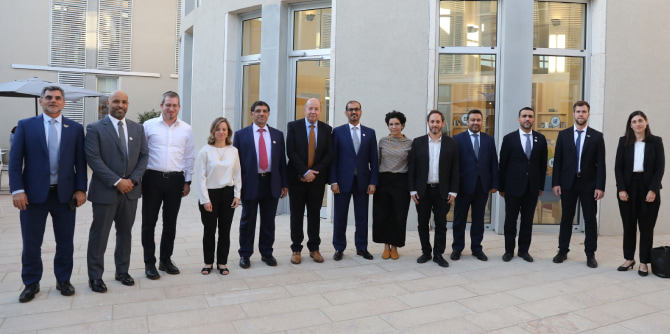
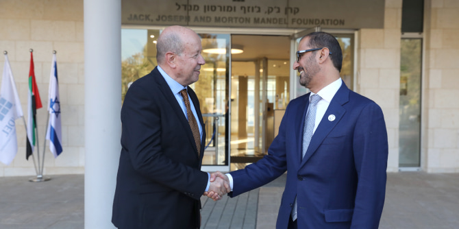
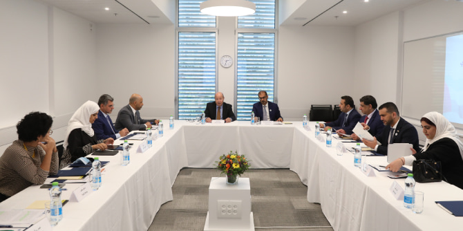
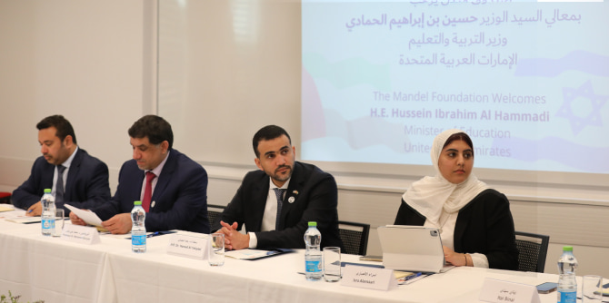

 Education ministry delegates and Mandel leadership (Photo: Abir Sultan)
A delegation of senior education officials from the United Arab Emirates, headed by education minister
Hussein Ibrahim Al Hammadi, visited the Mandel Foundation’s headquarters in Jerusalem in early November.
Moshe Vigdor, director general of the Mandel Foundation–Israel, welcomed the minister and delegation members and described the Foundation’s work in Israel, its impact on education, culture, and society, and its contribution to various institutions in the field of education in Israel. Among other things, he discussed the Foundation’s investment in the humanities at Israeli universities.
 Moshe Vigdor and Minister Hussein Ibrahim Al Hammadi (Photo: Abir Sultan)
The UAE delegation included the education ministry’s undersecretary for academic affairs, His Excellency
Dr. Mohamed Al Mualla; the minister’s advisor on higher education,
Professor Dr. Mohamed Baniyas; the director of the ministry’s science, technology, and scientific research department,
Dr. Hind Al Tair; and other senior officials of the education ministry.
Minister Al Hammadi and the delegation members expressed their strong admiration for the Israeli education system, and especially for its outstanding institutions of higher education. They were particularly interested in issues related to leadership training programs in a diverse and multifaceted society. The members of the delegation stressed the importance of the study of humanities, and concurred that it is important to include the humanities in the curriculum of fields such as engineering in academic institutions in Israel.
 Meeting with the delegation (Photo: Abir Sultan)
Yael Hess, director of the Mandel Leadership Institute,
Maya Bozo-Schwartz, director of the Mandel Graduate Unit, and
Ido Barkan, director of the Mandel Program for Academic Leadership in Teacher Education, addressed the distinguished guests, presenting the work of their units and the Foundation’s programs for a diverse range of populations. At the request of Minister Al Hammadi, an ongoing relationship between the UAE ministry of education and the Mandel Foundation–Israel will continue. An additional meeting is already scheduled to be held on Zoom in the near future.
 Members of the delegation (Photo: Abir Sultan)
{kind=link}
{kind=link}
{kind=link}
{kind=link}